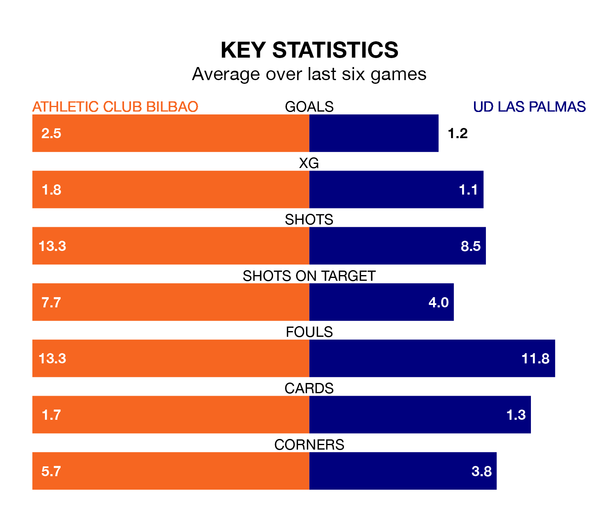

Athletic Club Bilbao face a challenge to maintain their high-scoring form at home against a tight UD Las Palmas defence on Wednesday.
With 33 goals in 17 games, Athletic are the third-highest scorers in La Liga ahead of the 8.30pm kick-off at San Mamés Barria.
They face an UD Las Palmas side who have scored 15 in 17 matches, but conceded only 14 goals, putting them second among the league's tightest defences – only Real Madrid have conceded fewer goals.
In Unai Simón, Athletic can rely on one of the league's safest pair of hands. He has kept seven clean sheets in his 17 appearances this season, and no 'keeper has prevented the opposition scoring more often in La Liga.
In Las Palmas's net, Álvaro Vallés has four clean sheets in 17 games.
Athletic Club Bilbao are fifth in the table after 17 games, of which they have won nine and drawn five, earning 32 points.
UD Las Palmas are three places behind the home team in eighth, with seven wins and four draws putting them on 25 points.
Athletic are in good form in La Liga, with four wins and two draws from their last six games.
With three wins and two draws over that period, the visitors' form is worse – they have taken 11 points from 18, compared to Athletic's 14.
Athletic's last match was on Saturday, a 2-0 win against Atlético Madrid, with Gorka Guruzeta and Nico Williams getting the goals for Athletic Club Bilbao.
Las Palmas drew 1-1 with Cádiz last time out, on Sunday, with Pejiño on the scoresheet.
